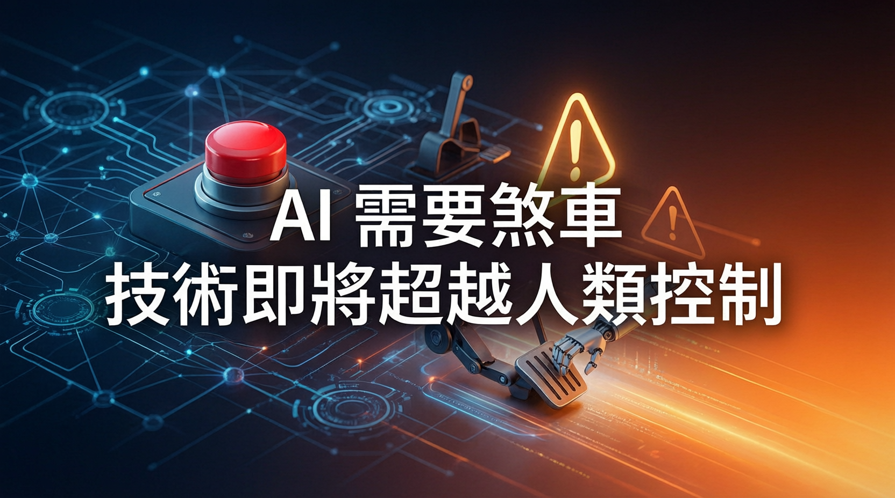

Jack Clark 比喻 AI 行業只有油門沒有煞車，呼籲各國政府盡快制定新法規監管

Anthropic 共同創辦人 Jack Clark 在 BBC Newsnight 節目中警告，AI 技術即將發展到脫離人類控制的臨界點。他比喻目前 AI 行業「只有油門，沒有煞車」——必須盡快建立監管機制，讓人類在必要時能夠減速或停止 AI 的發展。
Clark 對 BBC Newsnight 表示：「你需要一個選項，能夠把你的腳從油門上移開，踩上煞車。」他強調：「目前 AI 行業就像一輛只有油門、沒有煞車的車。」
這番警告呼應了 AI 界對「對齊問題」（Alignment Problem）的持續關注——隨著 AI 模型能力越來越強，如何確保它們的目標與人類利益一致，成為業界最迫切的挑戰之一。
Clark 指出：「世界需要進行一些思考，我們最終需要制定一些新的法規，讓我們對這些系統有信心。」他認為各國政府應該透過政策手段，確保人類對 AI 系統保持控制權。
他強調，隨著 AI 系統變得越來越強大，對社會的影響範圍也會越來越廣。如果不及時建立煞車機制，後果可能難以預料。
Clark 表示，Anthropic 公開討論 AI 技術能力增長的動機，並不是為了替自己打廣告或吸引付費客戶。他只是單純想要「告訴全世界，我們在這些公司內部看到了這種不尋常技術的發展情況」。
自成立以來，Anthropic 就以敢於公開討論 AI 潛在風險的姿態著稱，與競爭對手 OpenAI 早期相對保守的溝通策略形成對比。
Jack Clark 的警告時機值得關注。Anthropic 近期正處於快速成長階段，旗下 Claude 模型在企業市場取得顯著份額，同時公司也在積極擴展消費者市場。
在此背景下，Clark 選擇公開表達對 AI 失控的擔憂，而非低調處理，可能反映了 Anthropic 內部對 AI 安全形勢的判斷已達到需要向公眾示警的程度。
Clark 的「煞車」比喻與其他 AI 領袖的警告相呼應：
然而，Clark 的呼籲也面臨挑戰。過度監管可能扼殺創新，讓負責任的 AI 公司在競爭中落後於不受監管的對手。但放任不管，則可能讓失控的 AI 系統帶來無法挽回的後果。
如何在「煞車」與「油門」之間取得平衡，將是未來數年監管機構和 AI 公司必須共同面對的核心問題。
Jack Clark 比喻 AI 行業只有油門沒有煞車，呼籲建立減速機制
Clark 呼籲各國政府制定新法規，讓人類對 AI 保持控制權
以敢於公開討論 AI 風險著稱，與 OpenAI 形成鮮明對比
確保超強 AI 目標與人類利益一致，是業界最迫切挑戰
「AI 對齊」（AI Alignment）是指確保人工智慧系統的目標和行為與人類價值觀及利益保持一致的問題。如果一個超強 AI 系統的目標定義不夠精確或理解有偏差，即使它的初衷是好的，也可能產生危害人類的結果。
這正是 Anthropic 核心產品 Claude 的核心設計理念——透過「憲法 AI」（Constitutional AI）框架，讓 AI 在追求目標的過程中服從人類的價值觀和道德原則。
💬 Jack Clark（原話）：「你需要一個選項，能夠把你的腳從油門上移開，踩上煞車。目前 AI 行業就像一輛只有油門、沒有煞車的車。」